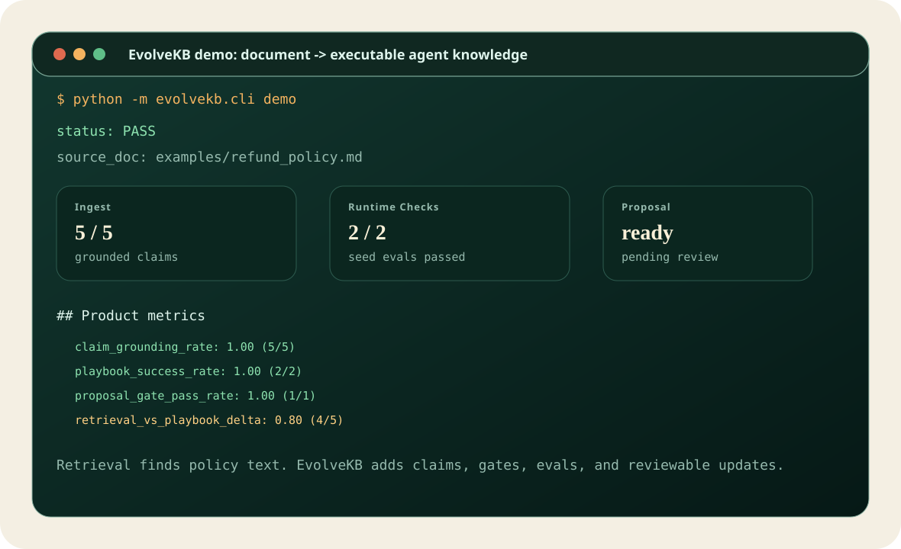

Agent Knowledge Runtime
EvolveKB
Turn documents into executable, verifiable, and evolvable agent knowledge: grounded claims, usage playbooks, SKILL.md procedures, gates, evals, and reviewable proposals.
Tests59 passed
Claims grounded5 / 5
Playbook evals2 / 2
Capability delta+0.80
Why not plain RAG?
Plain retrieval can find related paragraphs. It does not usually know how a policy, runbook, design rule, or research note should be applied.
EvolveKB separates what the system knows from how the agent should use it, then validates behavior before accepting knowledge changes.
Run the flagship demo
The demo ingests a synthetic refund policy, generates grounded claims, creates a proposal, runs evals, and keeps the current working tree untouched.
python -m evolvekb.cli demo

What it provides
| Layer | Role | Why it matters |
|---|---|---|
| Knowledge assets | Typed claims, concepts, evidence, and source refs. | Knowledge becomes inspectable and versionable. |
| Usage assets | Intent-specific rules for applying knowledge. | The agent knows when and how to use what it knows. |
| Skills | Executable SKILL.md procedures. | Knowledge becomes repeatable behavior. |
| Gates + evals | Validation before updates are accepted. | Prevents silent drift and broken playbooks. |
| Proposals | Reviewable knowledge changes. | Practice updates the KB without black-box writes. |